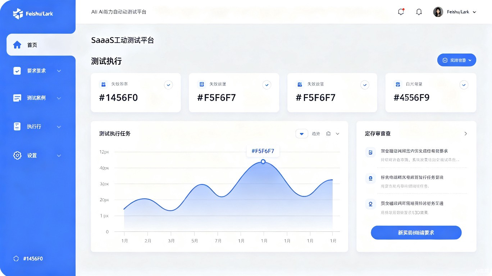
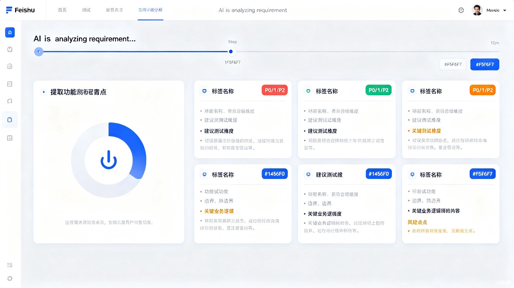
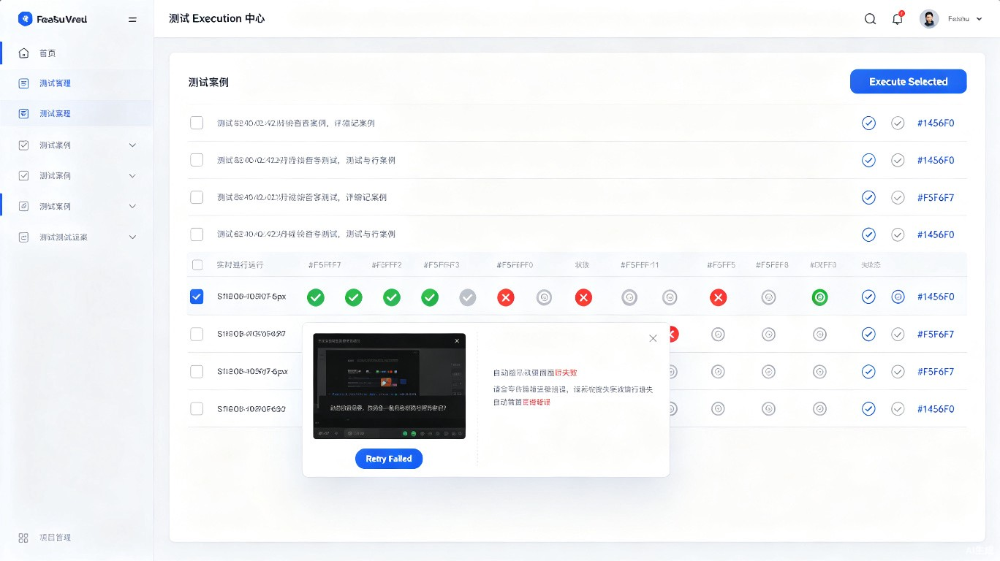

AI自动化测试生成智能体
面向QA测试人员的开源AI自动化测试工作台。本文档v1.1版本基于v1.0的初稿，重新审视了技术选型，新增了"脚本稳定性保障"模块，调整了AI评审维度，并引入了成本可控的模型动态选型机制，使其在工程上更可落地。
一、产品定位与目标用户
核心价值主张
当前市场上没有一个工具同时做到以下四点：
-
1
完全开源 — 不限制使用次数，不限团队规模，代码完全透明
-
2
全栈覆盖（规划） — Web + 移动端 + API，一个平台搞定
-
3
AI全流程自动化 — 从需求分析到用例生成、评审、执行、报告，AI贯穿始终
-
4
中文原生支持 — 飞书集成、中文需求理解、中文界面、本地化体验
用户输入方式
| 输入类型 | 格式 | 解析方式 | 典型场景 |
|---|---|---|---|
| 飞书链接 | 飞书文档/多维表格 URL | 飞书开放API自动拉取文档内容 | 产品经理在飞书中写好PRD，QA直接粘贴链接 |
| 需求文本 | 纯文本 / Markdown | 直接解析 | 从其他渠道（如口头传达、邮件）整理的需求描述 |
| 代码文本 | 源代码片段 | AI分析代码逻辑后生成测试 | 开发提供了具体的功能实现代码，基于代码生成测试 |
二、核心工作流
以下是QA人员使用系统的完整工作流。v1.1 在原工作流中新增了"脚本稳定性保障"环节，解决了AI生成脚本脆弱的痛点：
输入需求
提取功能点
测试用例
（v1.1新增）
（可选）
编辑用例
实时监控
导出归档
三、竞品分析与差异化
以下是目前主流AI自动化测试工具的对比分析：
| 工具 | AI生成用例 | 测试类型 | 开源 | 定价 | 中文支持 | 核心优势 | 核心劣势 |
|---|---|---|---|---|---|---|---|
| Testim Tricentis |
支持 | Web/移动端 | 否 | ~$30K/年 | 有限 | 自愈能力强 | 贵，中文差 |
| Mabl | 支持 | Web/移动端/API | 否 | $499+/月 | 有限 | 全栈统一平台 | 贵，中文差 |
| Applitools | 支持 | Web（视觉） | 否 | $2K+/月 | 有限 | 视觉测试标杆 | 贵，功能测试弱 |
| Cypress | Beta | Web | 是 | 免费+/月 | 有限 | 开发体验佳 | 仅Web，AI不稳定 |
| Playwright | 支持 | Web/API | 是 | 免费 | 有限 | 跨浏览器最广 | 需编程能力 |
| MeterSphere | 支持 | 接口为主 | 是 | 免费 | 优秀 | 国产开源完善 | UI测试能力弱 |
本产品的差异化定位
开源 + AI全流程（需求分析→生成→评审→执行）+ 飞书生态集成 + 中文原生 — 目前市场上没有同时满足这四个条件的工具。这是本产品最核心的竞争壁垒。
四、页面模块详细设计
4.1 全局布局框架
采用SaaS后台管理系统经典布局：顶部Header + 左侧导航栏 + 右侧内容区。
（下方各小节详细描述每个页面的模块布局）
全局布局参数
| 区域 | 尺寸 | 说明 |
|---|---|---|
| 顶部 Header | 高度 56px，固定 | 包含Logo、项目选择器、搜索框、通知、用户信息 |
| 左侧导航 | 展开 240px / 收起 64px | 支持展开/收起切换，一级菜单高度48px |
| 内容区 | 自适应剩余宽度 | 内边距 24px，背景色 #F5F6F7 |
| 整体栅格 | 8px 基础网格 | 所有间距遵循 4N / 8N 递增 |
4.2 首页（Dashboard）
首页是用户登录后看到的第一个页面，提供项目整体概况和快捷操作入口。
首页模块清单
| 模块 | 内容 | 交互 |
|---|---|---|
| 统计卡片区 | 4张统计卡片：通过率、失败用例数、用例总数、本周新增用例数 | 数字实时更新，支持点击跳转到对应详情页 |
| 趋势图 | 通过率趋势折线图（支持7天/30天切换） | ECharts图表，Hover显示具体数值 |
| 待评审任务 | 最近5条待评审的测试用例列表 | 每条显示用例标题、来源需求、生成时间；点击"查看"跳转到评审页 |
| 快捷操作 | "新建需求"主操作按钮 | 点击跳转到需求管理页，自动弹出输入表单 |
| 最近执行 | 表格：执行时间、用例数、通过率、状态标签 | 点击行跳转到对应执行详情 |
4.3 需求管理页
需求管理页是整个工作流的起点。用户在此输入需求信息，触发AI分析流程。
需求输入交互设计
| Tab | 输入组件 | 校验规则 | 提示信息 |
|---|---|---|---|
| 飞书链接 | 单行输入框 + 预览按钮 | 校验是否为合法飞书文档URL | 输入后显示"已识别文档：XXX"，确认文档可访问 |
| 需求文本 | Markdown编辑器（支持富文本） | 最少50字 | 建议包含：功能描述、预期行为、业务规则 |
| 代码文本 | 代码编辑器（语法高亮） | 非空 | 支持粘贴或直接输入代码片段 |
4.4 AI需求分析页
这是工作流中的核心AI页面，用户在此查看AI对需求的分析结果。页面分为"分析中"和"分析完成"两个状态。
每张卡片：功能名称、优先级标签(P0/P1/P2)、
测试维度建议、业务逻辑摘要、风险提示
识别功能点数、预估用例数
风险功能点数
▶ [确认并生成用例] 按钮
▶ [重新分析] 按钮
功能点卡片详细字段
| 字段 | 说明 | 示例 |
|---|---|---|
| 功能名称 | 从需求中提取的核心功能点 | "用户登录功能" |
| 优先级 | P0(核心) / P1(重要) / P2(一般) | P0 |
| 测试维度 | AI建议的测试方向 | 功能测试、边界值测试、异常输入测试 |
| 业务逻辑 | 关键业务规则梳理 | "密码错误5次后锁定账号30分钟" |
| 风险提示 | 需要关注或进一步确认的点 | ⚠ "未明确密码重置流程，建议与PM确认" |
4.5 测试用例生成页
AI基于需求分析结果，自动生成可运行的Playwright测试用例。用户可在此查看、编辑和管理生成的用例。
前置条件 → 操作步骤 → 预期结果
[展开查看Playwright脚本] 折叠面板
操作：编辑 | 删除 | 复制
每条用例展示的字段
| 字段 | 展示方式 | 是否可编辑 |
|---|---|---|
| 用例标题 | 卡片标题 | 是 |
| 所属功能模块 | 模块标签 | 是 |
| 优先级 | P0 / P1 / P2 | 是 |
| 前置条件 | 折叠区 - 文本 | 是 |
| 操作步骤 | 折叠区 - 步骤列表 | 是 |
| 预期结果 | 折叠区 - 文本 | 是 |
| Playwright脚本 | 代码折叠面板（语法高亮） | 是 |
| 评审状态 | 待评审 / 已通过 / 需修改 | 否（AI评审后更新） |
| 关联需求 | 需求来源链接 | 否 |
4.6 脚本稳定性保障页（v1.1 新增）
这是 v1.1 最重要的新增模块。调研发现 AI 生成的 Playwright 脚本有 ~70% 的失败率（脆弱选择器、登录态缺失、硬编码等待等）。此页面在用户审查用例前，自动进行脚本体检与加固，大幅提升脚本可执行性。
业界数据：AI 生成的 Playwright 脚本，~35% 因硬编码选择器失败，~20% 因登录态缺失失败，~15% 因硬编码 `waitForTimeout` 失败。[11] 如果不解决，AI 生成的脚本 ≈ 不可用。
检测脆弱选择器（CSS hash、nth-child）
计数：12条用例中3条有风险
已自动优化
检测是否需要登录态
计数：5条用例需要登录
已自动注入
检测硬编码 waitForTimeout
计数：2处硬编码等待
已替换为auto-wait
检测硬编码测试数据
计数：3处需要Faker
需配置
5项稳定性检查
| 检查项 | 检测规则 | 自动修复 | 状态 |
|---|---|---|---|
| 选择器稳定性 | 检测 `.css-xxx`（CSS hash）、`nth-child(n)`、绝对 XPath | 自动替换为 `getByTestId()` / `getByRole()` | MVP必须 |
| 登录态注入 | 检测用例是否访问需要登录的页面 | 通过 `storageState` API 注入登录态（用户在系统设置中配置测试账号） | MVP必须 |
| 等待机制 | 检测 `waitForTimeout()`、`page.waitFor(sleep)` | 替换为 `expect().toBeVisible()` 等 Web-First 断言 | MVP必须 |
| 动态数据 | 检测硬编码的用户名、邮箱、订单号等 | 提示用户在系统设置中配置 Faker 模板 | 建议MVP |
| 截图断言 | 检测是否需要视觉对比 | 需要时调用 Playwright `toHaveScreenshot()` | 后续版本 |
每个用例的"稳定性评分"展示
在用例列表的每条卡片上增加稳定性评分标签（0-100分），让用户一眼看出哪些用例可能有问题：
-
A
90-100分：选择器稳健、登录态正常、无硬编码等待 — 优秀
-
B
75-89分：个别选择器需要人工确认 — 良好
-
C
60-74分：存在脆弱选择器或登录态问题 — 需关注
-
!
< 60分：高风险，建议重写或放弃执行 — 不推荐
4.7 AI评审报告页（v1.1 简化）
v1.1 简化了评审维度：v1.0 原计划做 4 维度评审（覆盖率/边界值/断言合理性/冗余度），但实现成本高、用户理解成本高。v1.1 改为"综合质量评分 + 3条改进建议"，简单可交付。
v1.0 → v1.1：4维度报告（需多次LLM调用 + 向量相似度计算）→ 1个综合分 + 3条建议（仅1次LLM调用）。成本降低75%，用户理解时间从5分钟降到30秒。
综合评分维度（LLM 内部评估，对用户透明）
| 评分维度 | 权重 | 评估内容 |
|---|---|---|
| 需求覆盖度 | 40% | 用例是否覆盖了需求文档中的所有功能点 |
| 场景完整性 | 30% | 是否包含正常流程、异常流程、边界值场景 |
| 可执行性 | 30% | 脚本语法正确性、选择器稳定性、断言清晰度 |
3条改进建议的格式
建议 #1（用例 TC-007）
问题：当前用例仅测试了正常登录流程，未覆盖密码错误场景。
建议：增加"输入错误密码3次 → 验证锁定提示"步骤。
参考：
await page.getByLabel('密码').fill('wrong-password');
await page.getByRole('button', { name: '登录' }).click();
await expect(page.getByText('密码错误')).toBeVisible();
4.8 用例库管理页
用例库是所有测试用例的集中管理页面，QA可在此搜索、筛选、查看和编辑历史用例。
4.9 执行中心页
执行中心是QA实际运行测试用例的页面，支持批量执行、实时进度监控、失败截图和一键重跑。
▶ 用例2 ☑ [🔴 失败] → 展开查看截图
▶ 用例3 ☑ [🟠 执行中...]
▶ 用例4 ☐ [等待中]
进度条 ██████░░ 75%
▶ [重跑失败用例] 按钮
▶ [停止执行] 按钮
▶ [查看报告] 按钮
执行中心核心功能
| 功能 | 说明 | 状态 |
|---|---|---|
| 勾选用例 → 批量执行 | 支持全选/反选，点击"执行选中用例"启动批量测试 | MVP必须 |
| 实时执行进度 | 显示当前执行到第几条、成功/失败/执行中数量、进度条 | MVP必须 |
| 失败自动截图 | 执行失败的用例自动截取页面截图，附在执行结果中 | MVP必须 |
| 失败用例一键重跑 | 仅重新执行失败的用例，无需重新执行全部 | MVP必须 |
| 执行日志 | 实时显示每条用例的执行日志（Playwright输出） | 建议MVP |
| 登录态自动注入 | 在执行前从配置中读取测试账号，自动调用 storageState 注入 | MVP必须（v1.1） |
| 并行执行 | 支持多条用例并行执行，加速测试 | 后续版本 |
4.10 报告中心页
报告中心展示测试执行的完整报告，包含统计数据、趋势图表和失败详情。
4.11 系统设置页（v1.1 扩展）
v1.1 扩展了设置模块，新增"AI模型配置"和"测试账号配置"两个关键模块，分别解决成本控制和登录态注入问题。
| 设置模块 | 配置项 | 说明 | v1.1状态 |
|---|---|---|---|
| AI模型配置 | 模型选择（DeepSeek-V4 / Qwen3-Coder / Claude Sonnet 4.5 / GPT-4o / 本地模型）、API Key、温度参数、最大token | 控制用例生成和评审的AI模型；用户可按成本/质量选择 | v1.1新增 |
| 测试账号配置 | 不同角色的测试账号（如：普通用户/管理员）、用户名、密码、自动登录URL | 执行用例时自动注入登录态，无需每个用例重复登录 | v1.1新增 |
| 飞书集成 | 飞书App ID、App Secret、权限授权 | 用于拉取飞书文档内容 | 保留 |
| 项目设置 | 项目名称、被测应用URL、Playwright配置（浏览器、超时时间、并发数） | 配置当前测试项目的目标应用 | 保留 |
| 成本监控 | 本月LLM调用次数、消耗token、总成本、按模型分项 | 避免成本失控；可设置月度预算上限告警 | v1.1建议 |
| 通知设置 | 执行完成通知（站内/邮件/飞书消息） | 测试执行结束后自动通知 | 保留 |
| 成员管理 | 团队成员邀请、角色权限 | 控制谁可以创建/编辑/执行测试 | 保留 |
五、视觉设计规范
整体视觉风格参考飞书（Feishu/Lark）设计语言，传达专业、冷静、高效、克制的感觉。
5.1 色彩体系
品牌色
中性色
功能色
5.2 字体规范
| 用途 | 字号 | 字重 | 颜色 |
|---|---|---|---|
| 页面主标题 | 20px | Semibold (600) | #1F2329 |
| 区域标题 | 16px | Medium (500) | #1F2329 |
| 正文 | 14px | Regular (400) | #1F2329 |
| 辅助信息 | 12px | Regular (400) | #646A73 |
| 链接/品牌文字 | 14px | Regular (400) | #1456F0 |
| Placeholder | 14px | Regular (400) | #8F959E |
| 代码/脚本 | 13px | Regular (400) | #1F2329 |
5.3 组件规范
| 组件 | 尺寸 | 关键样式 |
|---|---|---|
| 主按钮 | 高度 32px / 36px | 背景 #1456F0，文字白色，圆角 6px |
| 次按钮 | 高度 32px / 36px | 背景透明，描边 #D0D3D6，文字 #1F2329 |
| 输入框 | 高度 32px | 描边 #D0D3D6，圆角 6px，聚焦时描边 #1456F0 |
| 卡片 | — | 背景白色，描边 #DEE0E3，圆角 12px，投影 S1 |
| 标签 Tag | — | 内边距 2px 8px，圆角 4px，字号 12px |
| 导航菜单项 | 高度 48px | 选中态文字 #1456F0 + 左侧 3px 指示器 |
| 弹窗 | — | 圆角 12px，投影 S3，最大宽度 600px |
5.4 间距与布局
| 场景 | 间距值 |
|---|---|
| 基础网格单位 | 8px |
| 卡片内边距 | 16px ~ 24px |
| 卡片间距 | 16px（带投影）/ 12px（无投影） |
| 模块间距 | 24px ~ 32px |
| 内容区到页面边缘 | 24px |
| 标题与内容间距 | 12px |
| 按钮与输入框间距 | 16px |
以蓝灰为基调，品牌蓝 #1456F0 作为视觉焦点。通过背景色差异（白色 vs #F5F6F7）、投影（三级体系）和描边建立清晰的空间层级。偏大圆角（12px）提供亲和感。严格 8N 间距系统保证节奏感。字重克制（400/500/600），信息密度高但不杂乱。
六、技术架构推荐（v1.1 修订）
v1.0 推荐的全栈 Python 方案，v1.1 调整为"FastAPI 调度层 + Node.js 执行层"双服务架构。理由：Playwright 官方 SDK 在 Node.js 上最成熟、并发性能最佳；Python 仅负责 AI 编排（生态最优）。
6.1 双服务架构（FastAPI + Node.js）
graph TB
subgraph Frontend[前端]
UI[Vite + React + Ant Design
SPA单页应用]
end
subgraph Backend[后端双服务]
API[FastAPI 调度服务
Python]
Worker[Node.js 执行服务
Playwright SDK]
end
subgraph AI[AI 引擎]
LLM1[DeepSeek-V4
默认·低成本]
LLM2[Claude Sonnet 4.5
高质量·可选]
LLM3[Qwen3-Coder
本地部署]
end
subgraph Storage[存储层]
DB[(PostgreSQL)]
Cache[(Redis
任务队列+缓存)]
Vector[(pgvector
向量数据库)]
end
subgraph External[外部]
Feishu[飞书API]
Browser[Playwright
浏览器实例]
end
UI -->|HTTP| API
UI <-->|WebSocket| API
API -->|任务入队| Cache
Worker -->|拉取任务| Cache
Worker -->|执行结果| Cache
API <-->|读写| DB
API <-->|历史相似用例| Vector
API -->|需求拉取| Feishu
API -->|LLM调用| LLM1
API -->|LLM调用| LLM2
API -->|LLM调用| LLM3
Worker -->|启动浏览器| Browser
各层职责
| 层 | 技术选型 | 职责 | 选择理由（v1.1修订） |
|---|---|---|---|
| 前端 | Vite + React + TypeScript + Ant Design 5 | UI展示、用户交互、实时进度 | v1.1 改：去掉Next.js，纯SPA。配置简单、启动快、对新手友好 |
| 调度服务 | Python + FastAPI + SQLModel + LangChain | 需求接收、AI编排、LLM调用、用户管理、报告生成 | AI生态最丰富（LangChain/官方SDK优先Python），开发速度5-10倍 |
| 执行服务（v1.1新增） | Node.js + Playwright SDK + BullMQ | 执行Playwright脚本、浏览器管理、截图、报告 | v1.1 改：独立Node.js服务。Playwright官方SDK最成熟，并发性能优于Python版本 |
| 任务队列 | Redis + BullMQ（Node.js） | 异步任务派发、结果回传、失败重试 | 连接调度服务和执行服务的桥梁 |
| 数据库 | PostgreSQL + pgvector | 用户、项目、用例、报告、向量检索 | 支持结构化数据和向量（后续RAG用） |
| AI引擎 | 动态模型（详见6.2） | 需求分析、用例生成、脚本生成、评审 | 用户可按成本/质量选择模型 |
6.2 AI模型动态选型与成本控制
v1.0 未考虑 AI 成本问题，v1.1 引入"模型动态选型"机制，让用户按需选择，平衡质量与成本。
推荐模型分级
| 等级 | 模型 | 适用场景 | 单次成本 | 1000个需求成本 |
|---|---|---|---|---|
| 经济 | DeepSeek-V4 API | 日常用例生成、批量任务 | $0.005 | $5.3 |
| 平衡 | Qwen3-Coder (API) | 中英文混合、代码生成 | $0.04 | $40 |
| 高质量 | Claude Sonnet 4.5 / 4.6 | 复杂业务、关键项目、复杂断言 | $0.23 | $230 |
| 顶级 | Claude Opus 4.6+ | 极复杂业务流（一般不需要） | $0.50 | $500 |
| 本地 | Qwen3-Coder-30B（自部署） | 数据合规要求、隐私敏感 | 仅GPU成本 | — |
成本控制三项机制
新用户默认使用 DeepSeek-V4，单次生成约 $0.005。1000 个需求 ≈ $5.3，开源用户零成本起步。
用户可在系统设置里随时切换模型：日常用 DeepSeek，关键复杂任务临时切 Claude Sonnet。系统记录每次调用的成本，支持月度预算上限告警。
系统自动使用 Prompt Caching（节省 60-80% input 成本），并采用"Claude Sonnet 生成 + Claude Haiku 评审"的混合策略，整体成本再降 30%。
成本对比演示
假设一个中型项目：500 个需求，每个需求生成 15 条用例：
| 模型策略 | 单项目总成本 | 备注 |
|---|---|---|
| 全用 Claude Opus 4.6 | $150-200 | 顶级质量，一般不需要 |
| 全用 Claude Sonnet 4.5（v1.0方案） | $115 | 质量好但成本高 |
| 全用 DeepSeek-V4（v1.1默认） | $2.7 | 开源用户首选，成本最低 |
| 混合：Sonnet生成 + DeepSeek评审 | $60 | 平衡方案 |
6.3 脚本稳定性 5 层架构
v1.1 新增。AI 生成的 Playwright 脚本必须经过这 5 层架构才能保证可执行性。
graph TB
L1[Layer 1: Fixtures
共享Setup/Teardown + storageState认证]
L2[Layer 2: Page Objects
选择器唯一来源，使用data-testid]
L3[Layer 3: API Helpers
数据准备10-50倍速提升]
L4[Layer 4: Reusable Flows
多页面用户旅程]
L5[Layer 5: Selector Map
data-testid + ARIA roles]
Raw[AI 生成的原始脚本] -->|1. 提取| L5
L5 -->|2. 标准化| L2
L2 -->|3. 提取通用逻辑| L4
L4 -->|4. 提取数据准备| L3
L3 -->|5. 套用 Setup/Teardown| L1
L1 --> Final[稳定可执行脚本]
每层职责与 AI 提示
| 层 | 职责 | AI 生成时的强制规则 |
|---|---|---|
| Layer 1: Fixtures | 登录态注入、浏览器初始化、清理 | 任何测试用例都通过 fixture 获取已登录的 browser context，禁止每个 test 独立登录 |
| Layer 2: Page Objects | 页面对象封装、选择器集中管理 | 每个页面有独立 Page Object 类，所有选择器在其中定义 |
| Layer 3: API Helpers | 数据准备（创建用户、初始化数据） | 测试数据通过 API 创建而非 UI 操作，速度提升 10-50 倍 |
| Layer 4: Reusable Flows | 跨页面的业务流（如下单流程） | 可复用的多步骤流程封装为 flow 函数 |
| Layer 5: Selector Map | 选择器选择规则（data-testid 优先） | 严禁使用 CSS hash、nth-child(n)、绝对 XPath；优先 getByTestId / getByRole / getByLabel |
6.4 关键技术决策表
v1.0 → v1.1 的核心调整对比：
| 决策点 | v1.0 推荐 | v1.1 修订 | 修订原因 |
|---|---|---|---|
| 前端框架 | Next.js | Vite + React SPA | 团队无前端经验，Vite上手快10倍 |
| 后端架构 | 全栈Python（FastAPI） | FastAPI调度 + Node.js执行双服务 | Playwright官方SDK在Node.js最成熟，并发性能更优 |
| 默认AI模型 | 未指定 | DeepSeek-V4 | 开源用户不应承担高昂AI成本 |
| AI评审 | 4维度（覆盖率/边界值/断言/冗余度） | 综合分+3条建议 | MVP实现成本高，用户理解成本高 |
| 脚本稳定性 | 未涉及 | 5层架构 + 稳定性评分 | AI生成脚本70%失败率，必须工程化解决 |
| 登录态 | 未涉及 | storageState + 测试账号配置 | 80%应用有登录，必须支持 |
| 验证码 | 未涉及 | 诚实告知不支持，文档说明 | 商业验证码无法绕，告知用户测试环境需关闭 |
| 成本监控 | 未涉及 | 成本监控+月度预算告警 | 避免开源用户因AI成本失控 |
- 稳定性：AI模型调用应设置重试机制和超时处理，避免生成流程中断影响用户体验
- 异步执行：测试用例执行是耗时操作，前端通过 WebSocket 实时推送进度
- 脚本安全：AI生成的Playwright脚本需在沙箱环境中执行，避免安全风险
- Worker扩展：执行层用 Node.js 编写，未来扩展移动端/API测试时只需新增 Worker 类型
- 可观测性：FastAPI 调度层、Node.js 执行层、Redis 队列、LLM 调用都需要埋点，便于排查
七、v1.0 质疑与调整说明（v1.1 新增）
v1.0 文档初稿发布后，技术顾问对原方案进行了严格的 7 个维度的质疑。基于 2026 年 7 月的深度调研（AI 模型能力、开源许可证、后端框架、Playwright 真实表现等），产生了 8 个关键调整。本章完整记录这些质疑与解决方案，便于团队 review。
质疑 1：前端"试试 Next.js"是风险信号
| 原方案 | 问题 | v1.1 调整 |
|---|---|---|
| Next.js (React) | 团队无前端经验，Next.js 的 SSR/SSG/路由/中间件概念对新手太陡峭；产品本身不需要 SSR（用户登录后的工作台） | 改为 Vite + React + TypeScript 纯 SPA。配置简单、启动快、Ant Design 集成成熟，学习曲线降低 10 倍 |
质疑 2：AI 生成的 Playwright 脚本 70% 会失败
| 原方案 | 问题 | v1.1 调整 |
|---|---|---|
| v1.0 未考虑脚本稳定性 | 业界数据：~35% 因硬编码选择器失败（AI 偏好 `.css-xxx`），~20% 因登录态缺失失败，~15% 因硬编码 `waitForTimeout` 失败[11] | 新增"脚本稳定性保障"模块（4.6节）+ 5层架构（6.3节）。AI 生成后强制检查选择器、注入登录态、替换硬编码等待 |
质疑 3：全栈 Python 是错误选择
| 原方案 | 问题 | v1.1 调整 |
|---|---|---|
| Python (FastAPI) 全栈 | Playwright 官方 SDK 在 Node.js 最成熟，Python 同步 API 在并发场景下有 GIL 锁问题，IO 密集型任务 Node.js 事件循环更合适[9] | 改为双服务架构：FastAPI 负责 AI 编排（生态最优），Node.js 负责执行 Playwright 脚本（SDK 最成熟）。Redis BullMQ 作为任务队列 |
质疑 4：登录态/验证码/动态数据——MVP 最大杀手
| 原方案 | 问题 | v1.1 调整 |
|---|---|---|
| 未考虑 | 80% 应用有登录、60% 有验证码、70% 有动态数据。MVP 若不解决，用户用一次就放弃 | 登录态：通过 Playwright `storageState` 自动注入（用户在设置中配置测试账号） 验证码：诚实告知不支持，要求测试环境关闭或提供万能码 动态数据：提供 Faker 模板配置 |
质疑 5：开源模式 + Claude API = 商业自杀
| 原方案 | 问题 | v1.1 调整 |
|---|---|---|
| 未指定模型，隐含用 GPT-4/Claude | 100 个企业用户 × 1000 个需求/月 × $0.23 = $23,000/月 ≈ $276,000/年。开源用户不愿承担此成本 | 默认用 DeepSeek-V4（$0.005/次，45 倍便宜），提供模型动态切换，成本监控 + 月度预算告警。1000 个需求仅 $5.3 |
质疑 6：4 维度 AI 评审技术上行不通
| 原方案 | 问题 | v1.1 调整 |
|---|---|---|
| 4 维度：覆盖率/边界值/断言/冗余度 | 覆盖率需"功能点-用例"映射数据结构；冗余度需向量相似度计算（embeddings）；每次评审多次 LLM 调用成本高 | 简化为"综合质量评分 + 3 条改进建议"（1 次 LLM 调用，成本降低 75%，用户理解时间从 5 分钟降到 30 秒） |
质疑 7：AI 评审强制化，剥夺用户控制权
| 原方案 | 问题 | v1.1 调整 |
|---|---|---|
| 强制流程：生成 → 评审 → 审查 → 执行 | 紧急 bug 场景下 QA 只想直接执行，强制评审增加摩擦 | AI 评审改为可选步骤，提供"快速执行"按钮跳过评审 |
调整总结：P0/P1/P2 优先级
| 优先级 | 调整项 | 原因 |
|---|---|---|
| P0 | 前端从 Next.js 改为 Vite + React SPA | 团队无前端经验，Vite 上手快 10 倍 |
| P0 | AI 生成后必须做"脚本稳定性"环节 | 否则 70% 脚本会失败，用户直接弃用 |
| P0 | 默认使用国产便宜模型（DeepSeek-V4） | 不然开源用户因成本放弃 |
| P1 | 执行层用 Node.js 独立服务 | Playwright 官方 SDK 最成熟 |
| P1 | AI 评审简化为综合分+3条建议 | MVP 够用，未来可扩展 |
| P1 | 登录态通过 storageState 注入 | 80% 应用有登录，必须支持 |
| P2 | AI 评审改为可选，不强制 | 给用户流程控制权 |
| P2 | 新增"成本监控"模块 | 避免成本失控 |
从"功能丰富的完美方案"转向"MVP 优先 + 工程化保障 + 成本可控"。每个调整都解决了 v1.0 中被忽视的具体问题，让方案在工程上真正可落地。
八、界面参考效果图
以下是基于飞书设计语言生成的界面参考效果图，用于传达整体视觉方向。实际开发时以设计稿为准。
首页 Dashboard 参考效果

AI需求分析页参考效果

执行中心页参考效果

九、MVP实施路线图（v1.1 调整）
v1.1 调整后，路线图新增了"脚本稳定性模块"和"Node.js 执行服务"两个关键节点：
gantt
title MVP 实施路线图 (v1.1)
dateFormat YYYY-MM-DD
axisFormat %m/%d
section 第一阶段：基础框架
项目初始化与技术选型 :done, a1, 2026-07-14, 5d
Vite + React 前端搭建 :done, a2, after a1, 7d
FastAPI 调度服务搭建 :active, a3, after a2, 7d
数据库与系统设置页 : a4, after a3, 5d
section 第二阶段：核心AI能力
飞书 API 集成 : b1, after a3, 7d
LLM 动态选型与缓存机制 : b2, after a3, 5d
需求管理 + AI 需求分析模块 : b3, after b1, 10d
测试用例生成模块 : b4, after b3, 10d
section 第三阶段：稳定性工程（v1.1新增）
Node.js 执行服务搭建 : c1, after a4, 10d
Redis + BullMQ 任务队列 : c2, after c1, 5d
脚本稳定性检查模块 : c3, after b4, 10d
storageState 登录态注入 : c4, after c3, 5d
AI 质量评分（简化版） : c5, after c3, 5d
section 第四阶段：执行与报告
执行中心开发 : d1, after c2, 10d
报告中心开发 : d2, after d1, 7d
用例库管理页 : d3, after d2, 7d
首页 Dashboard : d4, after d1, 5d
section 第五阶段：优化
性能优化与 Bug 修复 : e1, after d4, 7d
用户体验打磨 : e2, after e1, 7d
开源文档与发布 v1.0 : e3, after e2, 5d
v1.1 各阶段关键交付物
| 阶段 | 核心交付 | 里程碑 |
|---|---|---|
| 第一阶段 基础框架（2周） |
Vite+React 前端、FastAPI 调度服务、PostgreSQL 数据库、系统设置页（含AI模型配置） | 系统能跑起来，能配置飞书凭证和AI模型 |
| 第二阶段 核心AI能力（3周） |
需求输入→AI分析→用例生成 完整链路；LLM 动态选型 + Prompt Caching | 用户能从飞书链接生成完整的测试用例 |
| 第三阶段 稳定性工程（v1.1新增，3周） |
Node.js 执行服务 + Redis BullMQ 队列 + 5层脚本稳定性架构 + 登录态注入 + AI质量评分（简化版） | AI生成的脚本可执行率达 80%+ |
| 第四阶段 执行与报告（3周） |
执行中心、报告中心、用例库、Dashboard | 用户能执行测试并查看完整报告 |
| 第五阶段 优化（3周） |
性能优化、UX 打磨、开源文档、成本监控 | 正式开源发布 v1.0 |
v1.0 原计划 4 阶段约 14 周。v1.1 调整为5 阶段约 14 周，增加了一个独立的"稳定性工程"阶段，这是确保 AI 生成脚本可用的关键投入。